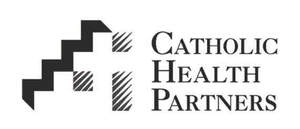

Trade Mark Journal No.2025/041 10 October 2025
UK00004243783 4 August 2025 (35,42,44,45)

- Class 35
- Hospital management; Supply chain management services; Purchasing agency services; Business services, namely, combined strategic goods or services sourcing and cooperative purchasing for others; Vendor management services for healthcare facilities; Inventory management; Business consulting services relating to product distribution, operations management services, logistics, supply chain and distribution solutions; Healthcare cost containment services; Group purchasing organization services, namely, coordinating and negotiating contracts with suppliers through which members of the organization can purchase equipment, products, supplies and services for the medical and healthcare fields and the provision of related administrative services; Group purchasing organization services, namely, providing and administering group purchasing programs for others through the coordination and negotiation of contracts with suppliers and service providers; Business management and business administration services, including advisory services and management of data relating to purchase-to-pay business processes, namely, assisting businesses in improvement of purchasing functions, expense management and bill presentment services; Negotiation of business contracts for others; Providing price benchmarking information to healthcare organizations; Monitoring and management of supplier performance for others; Bookkeeping, namely, tracking contract administrative fees; negotiation services for others for purchasing equipment, products, supplies and services for the medical and healthcare fields; Back-end administration, billing and reconciliation of contract administrative fees on behalf of others; Business consultancy and advice with regard to accounts payable, management of procure-to-pay processes and transactions, and procure-to-pay reporting; Consultation services for the healthcare industry, namely, providing data analytics and reporting to health care facilities regarding patient transfers between health care providers and health care facilities; Consultation services for the healthcare industry, namely, providing data analytics and reporting to health care facilities regarding triage services in the nature of medical consultations provided to the public via phone; Consultation services for the healthcare industry, namely, providing medical advice to health care facilities in the field of reducing hospital readmission rates; Consultation services for the healthcare industry, namely, providing medical information to health care facilities in the field of reducing hospital readmission rates; Consultation services for the healthcare industry, namely, providing medical consultancy services to health care facilities in the field of reducing hospital readmission rates; Consultation services for the healthcare industry in the nature of providing health related data analytics to health care facilities, namely, data reporting to health care facilities regarding risk of patient readmission and risk of patient hospitalization, all for medical diagnostic and treatment purposes; Consultation services for the healthcare industry in the nature of providing health related data analytics to health care facilities, namely, providing data analytics and reporting to health care facilities regarding risk of patient readmission and risk of patient hospitalization, all for medical diagnostic and treatment purposes; Fitness center management.
- Class 42
- Technology consultation in the field of healthcare supply chain; Software as a service (SAAS) services featuring software for providing a centralized platform for health care providers, patients and payers to schedule appointments, view analytics, view coalesced patient data from multiple healthcare providers, access medical history and electronic medical records, access information regarding preferred providers and prescriptions, and receive personalized recommendations for optimizing health.
- Class 44
- Healthcare; Home health care services; Hospitals; Nursing care; Nursing homes; Palliative care services; Providing health information; Providing medical information and patient medical records and files for facilitating and coordinating patient transfers between health care providers and health care facilities and for facilitating health care referrals and communications between health care providers and health care facilities; Consulting services to health care providers in the field of patient management, namely, providing data analytics and reporting regarding patient transfers between health care providers and health care facilities; Providing health care information and triage services in the nature of medical consultations provided to the public via phone; Medical nursing services, namely, providing information regarding the identification of specific health-related concerns and general health issues and connecting the patient with the appropriate healthcare provider; Consulting services to health care providers in the field of patient management, namely, providing data analytics and reporting regarding triage services in the nature of medical consultations provided to the public via phone; Providing medical advice to patients and healthcare professionals in the field of reducing hospital readmission rates; Providing medical information to patients and healthcare professionals in the field of reducing hospital readmission rates; Providing medical consultancy services to patients and healthcare professionals in the field of reducing hospital readmission rates; Medical assistance consultancy provided by doctors and other specialized medical personnel in the nature of hospital readmission mitigation services, namely, assisting health care providers with reducing hospital readmission rates; Consulting services to health care providers in the nature of providing health related data analytics to health care providers, namely, data reporting to health care providers regarding risk of patient readmission and risk of patient hospitalization, all for medical diagnostic and treatment purposes; Consulting services to health care providers in the field of patient management, diagnosis, and treatment, namely, providing data analytics and reporting to health care providers regarding risk of patient readmission and risk of patient hospitalization, all for medical diagnostic and treatment purposes; Health care services; direct-to-employer healthcare services; health care services, namely, wellness programs; Providing wellness programs and health coaching programs via an internet website patient portal; Providing health and wellness programs via an internet website patient portal; biometric screening services; providing employee assistance programs, namely, counseling in the fields of behavior health, mental health, health and wellness, stress management and work/life health issues; nurse hotline services, namely, providing medical and health care information by telephone; medical assistance consultancy provided by nurses through a help hotline; providing wellness services, namely, providing a healthy eating program in the nature of assistance and consultation to individuals to help them make health, wellness and nutritional changes in their daily living to improve health; medical clinic services; specialty pharmacy services in the nature of pharmaceutical advice and dispensing of pharmaceuticals; preparation of prescriptions in pharmacies; executive healthcare services, namely, exams, evaluations, wellness planning and support; healthcare services, namely, occupational health services; medical services to businesses, namely, occupational health screening in the nature of pre-employment and post-employment wellness vaccines, drug and alcohol testing, pulmonary function testing, hearing testing and analysis services; medical services to business, namely, occupational health screening in the nature of pre-employment physicals and fingerprinting services; medical services to businesses, namely, occupational health screening in the nature of post-employment annual physicals, return-to-work exams, occupational therapy services, and consultation services in the field of hearing, hearing loss, and hearing conservation; occupational therapy services; physical therapy services; physical therapy consultation; physical and occupational therapy services, namely, physical rehabilitation services and ergonomics evaluations: Managed care services, namely, electronic processing of health care information; Business consulting, management, and planning services in the field of healthcare; retail pharmacy services; on-site retail pharmacy services; on-site pharmacy services; mail order pharmacy services; retail specialty pharmacy services; specialty pharmacy services; providing retail pharmacy services featuring home delivery services.
- Class 45
- Tracking and monitoring regulatory requirements in the field of healthcare for regulatory compliance purposes.
Bon Secours Mercy Health, Inc.
Representative: Gill Jennings & Every LLP